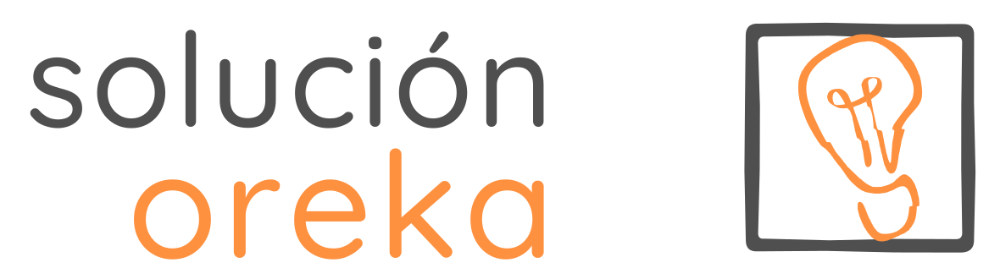
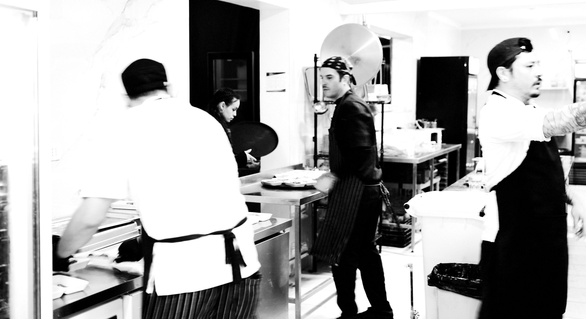
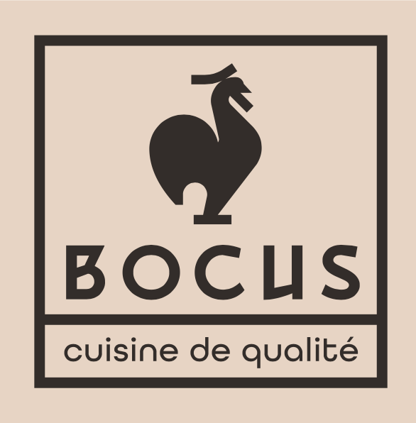
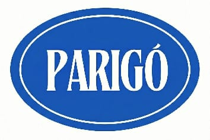
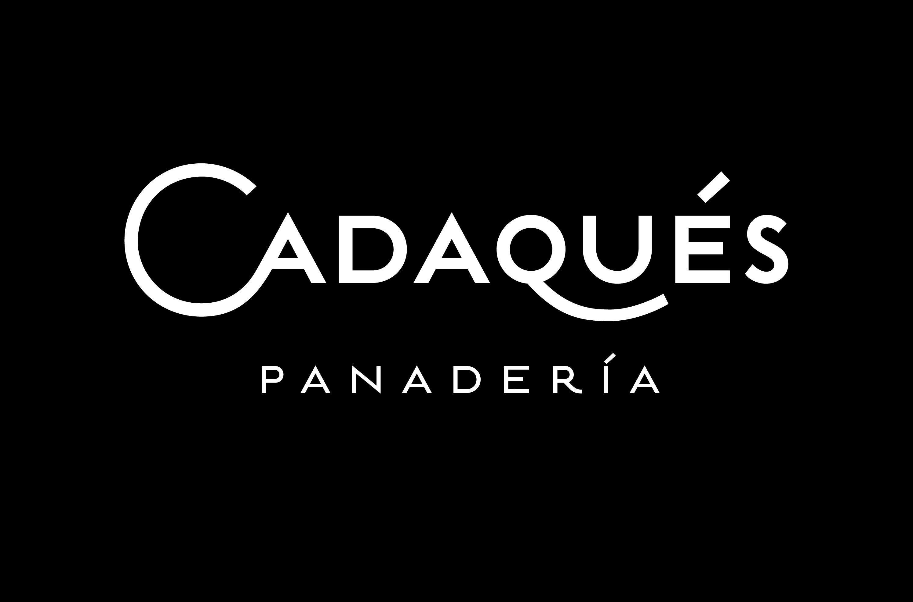
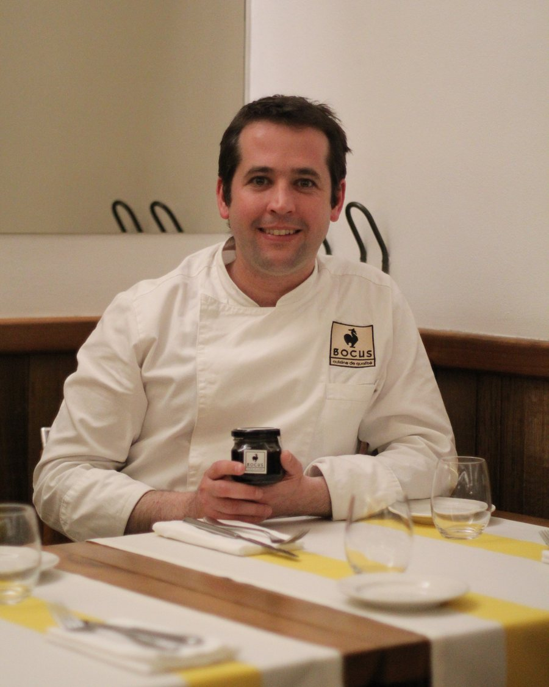
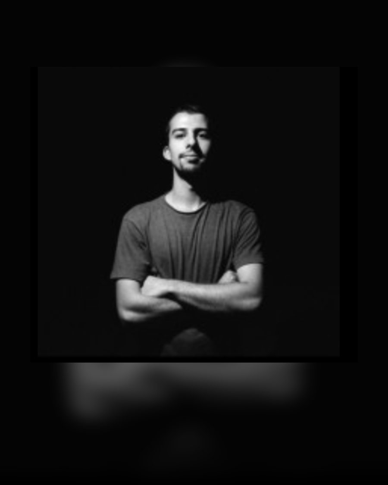
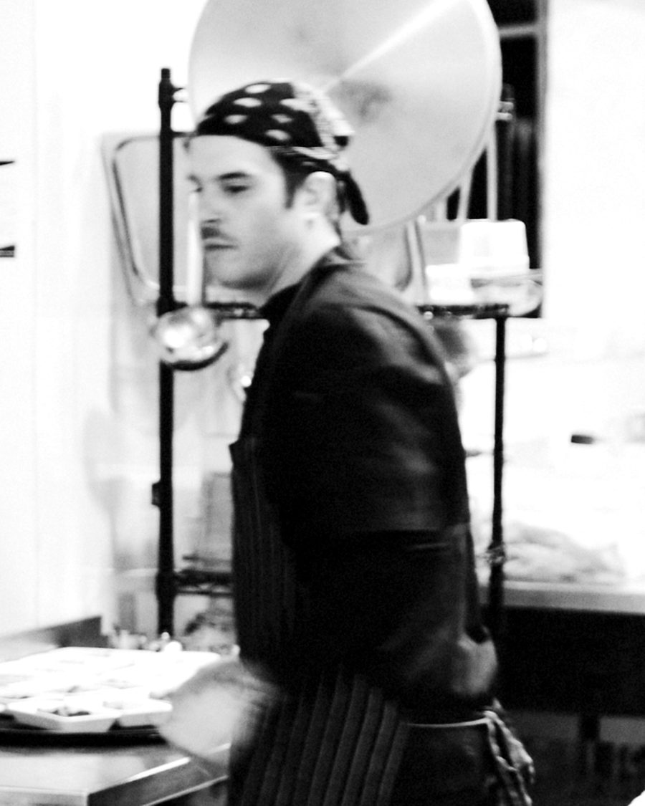
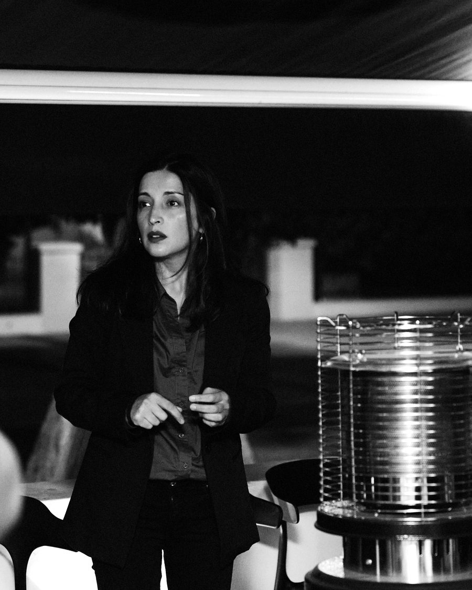

Diseñar el negocio
Concepto, carta, cocina, flujos, experiencia y canales con una lógica económica desde el comienzo.

Consultoría gastronómica desde 2019
Unimos oficio de cocina, personas, números y tecnología para que una gran idea se convierta en una operación capaz de sostenerse.

No vendemos fórmulas. Diseñamos sistemas que el equipo puede hacer suyos.
De HORECA a OREKA
Empezamos como Solución Horeca. Cuando Louis se sumó, propuso un nombre que se parecía a nuestro origen y decía algo más grande: Oreka, equilibrio en euskera.
Hoy esa idea guía cada decisión. Una carta debe emocionar y dar margen. Un proceso debe ordenar y dejar espacio a las personas. La tecnología debe quitar trabajo, no agregarlo.
Lo que hacemos
Nos involucramos donde una operación necesita claridad: antes de abrir, cuando hay que recuperar el control o cuando llegó el momento de crecer.
Concepto, carta, cocina, flujos, experiencia y canales con una lógica económica desde el comienzo.
Producción, compras, servicio, estándares y equipo. Lo que funciona en un documento tiene que funcionar en un turno.
Costos, margen, producto y hábitos de gestión. Miramos datos honestos para corregir lo que importa.
El laboratorio vivo
Bocus, Parigó y Cadaqués son marcas del grupo con operación diaria real. Ahí comprobamos lo que proponemos: con clientes, equipos, costos y servicio.

01Un universo de productos y cocina francesa pensado para llegar más allá de la mesa, con una experiencia que también vive online.
Explorar Bocus
02La vida de un restaurante en La Pastora: cocina, panadería, servicio y personas coordinadas para que cada visita se sienta simple.
Conocer Parigó
03Panadería de barrio y oficio cotidiano: masas, vitrina y atención sostenidas por una operación que cuida cada detalle.
Conocer CadaquésLas marcas del grupo mantienen sus propias identidades y entidades operadoras. Oreka aporta dirección, método y aprendizaje compartido.
Tecnología nacida de la operación
UN PROYECTO DEL ECOSISTEMATOTO reúne herramientas digitales pensadas desde el trabajo real. La carta que ve el cliente y el movimiento de productos detrás de ella son dos partes de la misma experiencia.
Una carta digital que el restaurante puede mantener al día y que sus clientes abren desde un código QR.
Visitar TOTO Carta QRInventario y movimientos entre espacios: una herramienta para dar trazabilidad a lo que se compra, recibe, transforma y traslada.
Diseñado junto a la operación; alcance y piloto en evolución.Nuestro método
Una buena recomendación termina cuando el equipo puede usarla, medirla y mejorarla sin depender del consultor.
Trayectoria
Hemos acompañado cocinas, cartas y equipos en proyectos con desafíos muy distintos. Cada caso reforzó la misma convicción: el diseño vale cuando se puede operar.
Panadería y procesos para una institución gastronómica.
Gestión de personas y estructura para un formato de alto volumen.
Flujos para una cocina que atiende salón y delivery.
Trabajo de carta y producto junto al equipo gastronómico.
Quiénes somos
Oreka es dirección, cocina, servicio, producto y personas trabajando con un mismo criterio. El equipo hace que las ideas se vuelvan realidad cada día.




Hablemos
Cuéntanos dónde está la fricción. Empezamos por entenderla y definimos juntos el siguiente paso.
Escribir a Oreka hola@solucionoreka.com